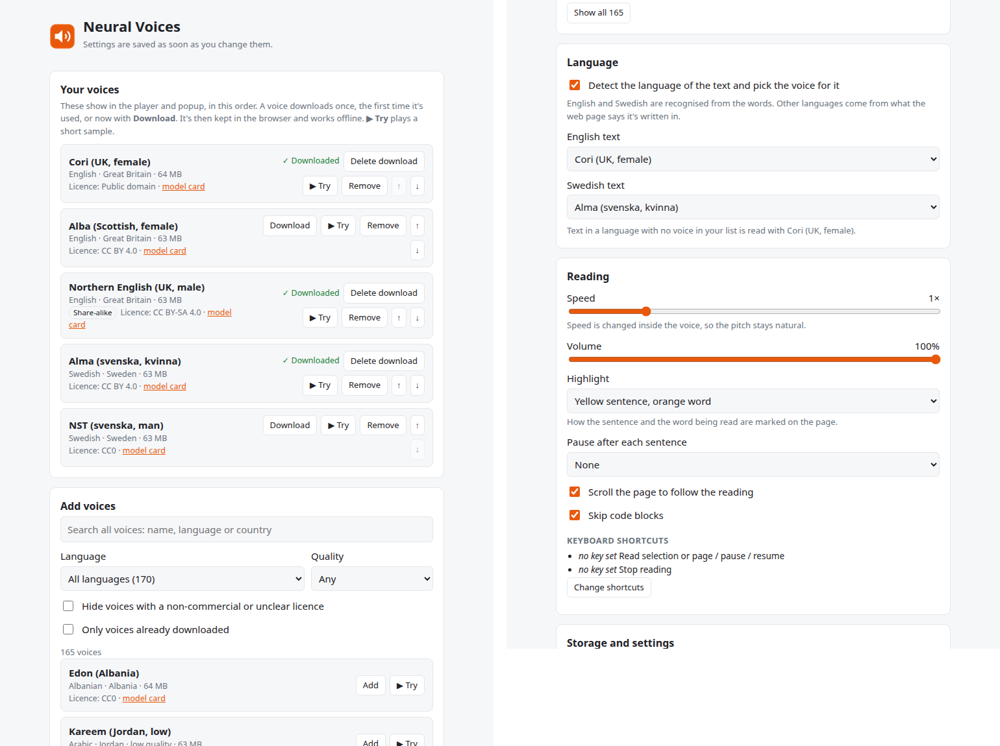

Listen to any web page in a natural voice
Neural Voices is a free browser add-on that reads articles and PDFs aloud and marks each word as it's spoken. The voices run inside your browser, so your text never leaves your computer.
The storm arrived just after midnight, and the light kept turning. She counted the seconds between each flash.
Free and open source. Signed by Mozilla. No account, no tracking.
What it can do
Reads the part you want
The whole article, without menus, sidebars and footers. A selection. Or click any sentence and it starts there.
You can follow along
The sentence is shaded and the word being spoken is marked. The page scrolls with the reading.
Reads PDFs
Open a PDF from the web or from your computer. It's shown in the add-on's own viewer and read like a page.
Recognises any language
Every paragraph's language is recognised from its words, so a page that mixes languages changes voice as it goes.
170 voices, 49 languages
It starts with five English and Swedish voices. Press ▶ Try in Settings to hear any other voice before you add it.
Faster without the chipmunk
From 0.75× to 2×. Speed is changed inside the voice, so it sounds like a person talking faster, not a sped-up recording.
Works offline
Once a voice is downloaded it's kept in the browser. After that, reading needs no internet at all.
Teach it a word
If a voice says a name wrong, select it, right-click Fix pronunciation and write how it should sound.
How it works
Most read-aloud tools send your text to a company's server and play back what comes back. Neural Voices does all of it on your own computer, with Piper, an open-source neural voice that is small enough to run inside a browser tab.
All inside your browser The only thing downloaded is the voice itself: one file, most about 63 MB, the first time you use it. It comes from Piper's official collection on Hugging Face and is checked before it's used.
To start quickly, the first sentence is read in short pieces, so sound begins within a few seconds. While you listen, about a minute of speech is prepared ahead, so there are no gaps.
Install
Neural Voices is in Firefox's add-on store. For Chrome, Edge and Brave it isn't in a store yet.
- Firefox: open Neural Voices on addons.mozilla.org and click Add to Firefox. It updates itself.
- Chrome, Edge or Brave: download
neural-voices-…-chromium.zipfrom the latest release on GitHub and unzip it. Openchrome://extensions, turn on Developer mode, click Load unpacked and pick the folder. - Try it: reload a page with an article, click the Neural Voices button in the toolbar and press Read page. The first voice downloads once, which takes a few seconds.
Using it
| Toolbar button → Read page | Reads the article. |
| Select text → the orange speaker | Reads the selection. |
| Right-click → Read aloud from here | Reads from that spot. |
| Right-click a PDF link → Read PDF aloud | Opens the PDF and reads it. |
| Alt+Shift+R | Read, pause or resume. |
| Alt+Shift+X or Esc | Stop. |
A small player appears while it reads, with previous and next sentence, speed, voice, and ⚙ for Settings.

Privacy
The text you listen to is never sent anywhere. The add-on goes online only to download a voice the first time you use it, to play a short sample when you press ▶ Try, and to fetch a PDF you ask it to read. No analytics, no accounts. Settings stay in your browser. Full privacy policy.
Questions
Is it free?
Yes. The add-on, the voices and everything it uses are free. There's nothing to buy and no account.
Why is the first time slower?
The voice downloads once (most are about 63 MB), and starting a voice takes a few seconds. After that, reading starts in about a second when you open the toolbar button first, because it warms the voice up.
Does it work on a slow computer?
On one ordinary processor core a voice makes speech about three times faster than it's spoken. Very slow or very busy computers may pause between sentences.
Which languages can it read?
49, from Albanian to Welsh. Every paragraph's language is recognised from its words, using your browser's built-in language detector (it runs on your computer). Add voices in Settings.
Does it work on Android?
No. It's made for computers: Firefox, Chrome, Edge and Brave on Windows, Mac and Linux.
Why does the word marking sometimes run ahead?
Piper doesn't report when each word starts, so the add-on estimates it from the length of the words and the pauses at punctuation. The sentence marking is exact.
Credits
Built on Piper, ONNX Runtime Web, espeak-ng, piper-wasm and pdf.js. Each voice has its own licence, shown in Settings. Neural Voices is free software under the GPL-3.0; the code is on GitHub.